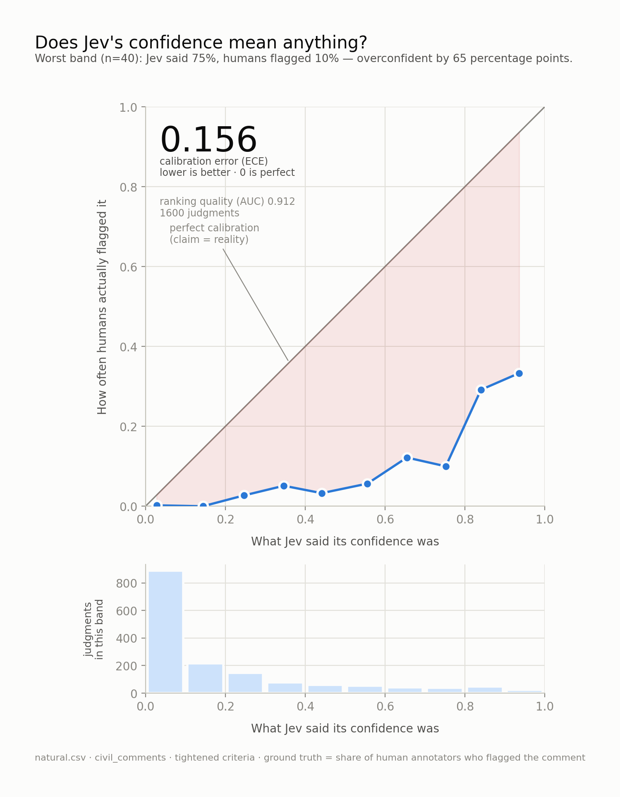
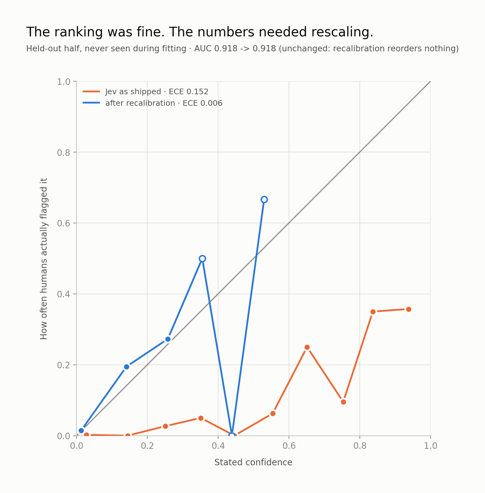

A decision model returns a probability, and your code writes a threshold against it. So I checked whether the number is honest — 8,000 judgments measured against human annotations.
Jev doesn't generate text. You hand it state, it hands back a typed probability. That makes the probability the entire product — and TypeSafe's own docs tell you to validate calibration on your own data without publishing any.

| Question | Metric | If it's bad | |
|---|---|---|---|
| Ranking | Can it tell flagged from clean? | AUC 0.91 | the model can't do the task |
| Calibration | Do the numbers mean what they say? | ECE 0.156 | the numbers need rescaling |
A model can sort almost perfectly while its probabilities are nonsense. Reporting accuracy alone hides both facts. On one question, Jev at the default threshold scored 61% where answering “no” every time scores 68% — worse than a constant, while ranking at AUC 0.83.
The obvious objection, so I tested it: four wordings of the same question in a single call, over identical state, so only the phrasing varied.
| Wording | Mean p | ECE | AUC |
|---|---|---|---|
| Original | 0.445 | 0.397 | 0.896 |
| Mirrors the annotators' own definition | 0.566 | 0.519 | 0.881 |
| Strict — high bar, explicit exclusions | 0.259 | 0.211 | 0.913 |
| Bare — no criteria at all | 0.488 | 0.441 | 0.888 |
True base rate: 4.8%. Wording matters a lot — but the wording mirroring the human raters' own published definition scored worst of the four. AUC barely moved across all of them: wording shifts the scale, not the signal. And nothing fixed it — the strictest still predicted 26% where reality was 5%.
So I re-ran everything with the best wording I found. Error fell from 0.209 to 0.156 and required human review roughly halved. The bias survived.

A logistic fit — two parameters, about twenty lines — removed 96% of the calibration error on held-out data. AUC went 0.918 → 0.918, because a monotonic rescale reorders nothing. The ranking was always there; only the units were wrong.
jev-1.13.0).None of this is an argument against the model. As a high-recall pre-filter
with a calibration layer on top, it works well. As if p > 0.9,
it doesn't do what it looks like it does.